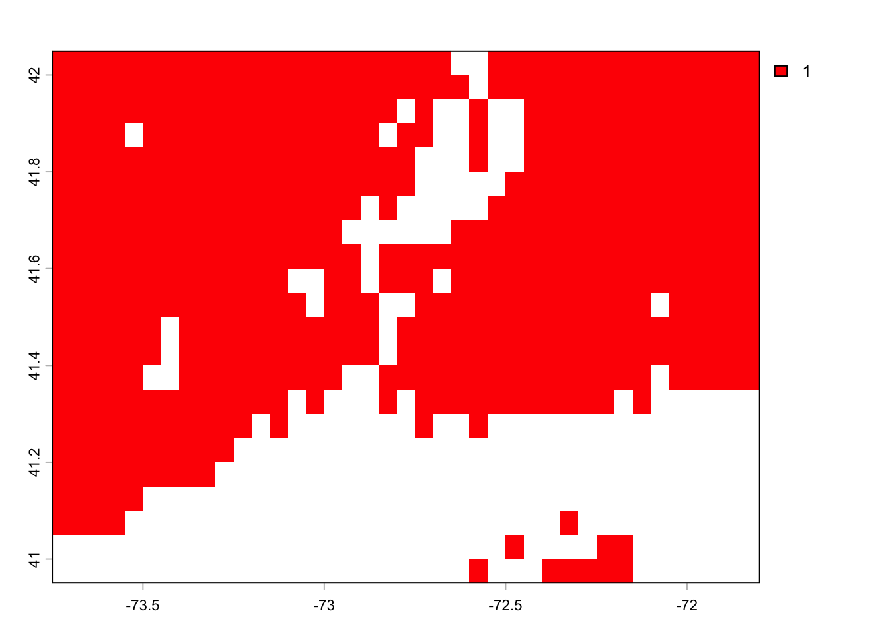
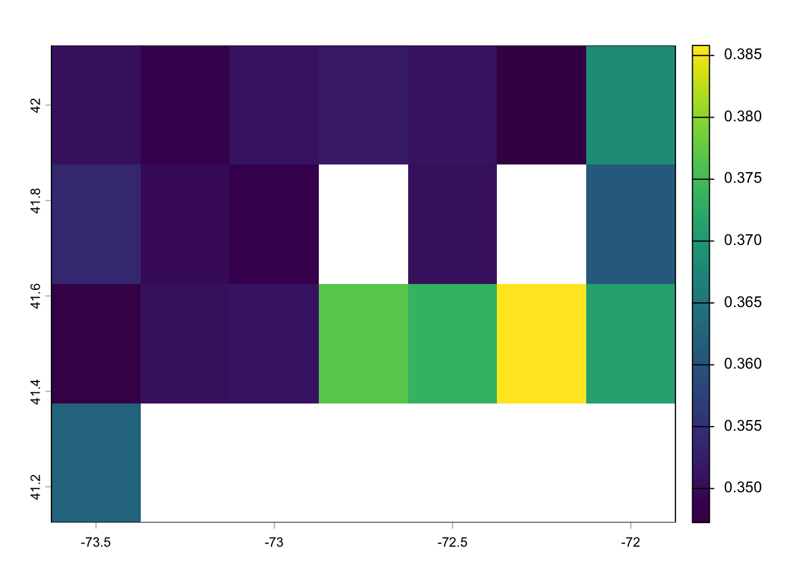

library(randomForest)
library(tidyverse)
library(tidyterra)Spatial Projections of a randomForest model
In this workshop, we will create a spatial projection of our random forest model for monthly methane exchange from natural ecosystems.
To date, we have completed model calibration, validation, and sensitivity analysis. Next, we can apply the model to a landscape to estimate natural methane emissions. For this workshop, we will calculate Connecticut’s natural methane emissions in 2018.
WarningThis workshop depends on Data Integration in R
This workshop reuses the ERA5 climate rasters downloaded and saved in data_integration.qmd (data/products/era5_ppt_monthly.tif and data/products/era5_tmean_monthly.tif), instead of downloading climate data again. If you haven’t completed that workshop’s ERA5 download section yet, go do that first.
In this workshop, we will:
Make a list of the variables, their units, and the exact name and class of each variable in your model.
Determine where you can get a spatial version of each variable in your model.
Format each spatial layer to match the exact conditions of the data used to fit the model.
Make spatial predictions.
Use predictions to calculate an annual budget.
Load libraries:
(1) Make a list of the variables, their units, the exact name and class of each variable in your model.
Load the datasets and the model.
load(file = "data/final_model.RDATA")
# The saved model object is called FCH4_F_gC.rf; alias it to match this course's naming convention
fch4_rf <- FCH4_F_gC.rfThere are four items in this .RDATA file. (1) the randomForest model, (2) the flux net dataset, (3) the training data, and (4) the testing data.
Look at the model to determine which variables are in it:
fch4_rf
Call:
randomForest(formula = FCH4_F_gC ~ P_F + TA_F + Upland, data = train, keep.forest = T, importance = TRUE, mtry = 1, ntree = 500, keep.inbag = TRUE)
Type of random forest: regression
Number of trees: 500
No. of variables tried at each split: 1
Mean of squared residuals: 4.40718
% Var explained: 32.54The model includes precipitation in mm (P_F), mean air temperature in degrees Celsius (TA_F), and an indicator for upland ecosystems (Upland).
Check the class of each variable.
class(train$P_F)[1] "numeric"class(train$TA_F)[1] "numeric"class(train$Upland)[1] "factor"To project this model in space, we need the following variables:
- Monthly total precipitation in mm and the name of the layer needs to be “P_F”
- Monthly mean air temperature in degrees Celsius and the layer name needs to be “TA_F”
- We need an indicator for upland ecosystems called Upland. All inundated ecosystems (+ snow) are given the value “0” and non-inundated ecosystems are given the value “1”. Croplands and urban areas should be filtered out of this layer.
(2) Determine where you can get a spatial version of each variable in your model.
We will spatialize the model for Connecticut in 2018 — the most recent year covered by both the tower flux data and the ERA5 download from data_integration.qmd.
- Monthly total precipitation (mm): ERA5 reanalysis (already downloaded in
data_integration.qmd). - Monthly mean air temperature in degrees Celsius: ERA5 reanalysis (already downloaded in
data_integration.qmd). - Indicator for Upland ecosystems (Upland): MODIS Land Cover Data (Majority_Land_Cover_Type_1). downloaded from: (2001 - 2022) https://lpdaac.usgs.gov/products/mcd12c1v061/ the user guide is available here: https://lpdaac.usgs.gov/documents/101/MCD12_User_Guide_V6.pdf.
To use raster layers with the predict function, they must have the same CRS, resolution, and extent!
(3) Format each spatial layer.
library(rnaturalearth)
library(rnaturalearthhires)
library(terra)
library(tidyverse)
library(sf)Create an AOI for Connecticut.
us_states <- ne_states(country = "United States of America", returnclass = "sf")
ct <- us_states %>% filter(postal == "CT")
plot(ct$geometry)
Load the ERA5 rasters saved in data_integration.qmd, keep only the 2018 layers, then crop and mask them down to Connecticut:
era5_ppt_all <- terra::rast("data/products/era5_ppt_monthly.tif")
era5_tmean_all <- terra::rast("data/products/era5_tmean_monthly.tif")
ct_era5_ppt <- era5_ppt_all[[grepl("2018", names(era5_ppt_all))]] %>%
crop(ct) %>%
mask(ct)
ct_era5_tmean <- era5_tmean_all[[grepl("2018", names(era5_tmean_all))]] %>%
crop(ct) %>%
mask(ct)
ct_era5_tmeanclass : SpatRaster
size : 4, 7, 12 (nrow, ncol, nlyr)
resolution : 0.25, 0.25 (x, y)
extent : -73.625, -71.875, 41.125, 42.125 (xmin, xmax, ymin, ymax)
coord. ref. : lon/lat WGS 84 (EPSG:4326)
source(s) : memory
varname : era5_tmean_monthly
names : Jan 2018, Feb 2018, Mar 2018, Apr 2018, May 2018, Jun 2018, ...
min values : -4.404791, 0.618127, 0.727747, 5.277246, 13.269861, 17.386683, ...
max values : -0.342291, 3.518518, 3.577356, 7.413965, 17.678064, 20.730433, ...
time : 2018-01-01 00:00:00 to 2018-12-01 00:00:00 (12 steps)Save the layers.
writeRaster(ct_era5_tmean, "data/products/era5_tmean_ct_2018.tif", overwrite = TRUE)
writeRaster(ct_era5_ppt, "data/products/era5_ppt_ct_2018.tif", overwrite = TRUE)Now, we need to get the MODIS IGBP layers. The dataset provided was developed from MODIS Land Cover Data (Majority_Land_Cover_Type_1) downloaded from: (2001 - 2022) https://lpdaac.usgs.gov/products/mcd12c1v061/. This dataset was downloaded for the entire globe and cropped to include only Connecticut.
Load the data.
igbp_ct <- terra::rast("data/MODIS_IGBP_2001-2022_CT.tif")
igbp_ctclass : SpatRaster
size : 22, 39, 22 (nrow, ncol, nlyr)
resolution : 0.05, 0.05 (x, y)
extent : -73.75, -71.8, 40.95, 42.05 (xmin, xmax, ymin, ymax)
coord. ref. : lon/lat Unknown datum based upon the Clarke 1866 ellipsoid
source : MODIS_IGBP_2001-2022_CT.tif
names : Major~ype_1, Major~ype_1, Major~ype_1, Major~ype_1, Major~ype_1, Major~ype_1, ...
min values : 0, 0, 0, 0, 0, 0, ...
max values : 14, 13, 14, 14, 14, 13, ...
time (raw) : 992563200 to 1655251200 (22 steps)igbp_ct[[1]] %>% plot()
This layer needs to be reformatted. Using the User Guide we can determine what each numerical value represents: https://lpdaac.usgs.gov/documents/1409/MCD12_User_Guide_V61.pdf
1: ENF. 2: EBF. 3: DNF. 4: DBF. 5: MF. 6: CS. 7: OS. 8: WS. 9 : SAV. 10 : GRA. 11: WET. 12 : CRO. 13 : URB. 14 : CRO. 15 : SNO. 16: Barren. 17 : WAT. 0: Unclassified.
Look at the layer. Here I use “[[1]]” to see only the first layer, which is for the year 2001.
terra::plot(igbp_ct[[1]])
Reclassify each value, one at a time, and think about how you should reclassify each. We want to give all uplands the value “1” and all inundated systems the value “0”.
First, make a copy of the raster (igbp_ct) and call it igbp_ct_r:
igbp_ct_r <- igbp_ctReclassify 0 value to NA.
igbp_ct_r[igbp_ct_r == 0] <- NA
terra::plot(igbp_ct_r[[1]])
Reclassify the other values:
igbp_ct_r[igbp_ct_r == 1] <- 1
igbp_ct_r[igbp_ct_r == 2] <- 1
igbp_ct_r[igbp_ct_r == 3] <- 1
igbp_ct_r[igbp_ct_r == 4] <- 1
igbp_ct_r[igbp_ct_r == 5] <- 1
igbp_ct_r[igbp_ct_r == 6] <- 1
igbp_ct_r[igbp_ct_r == 7] <- 1
igbp_ct_r[igbp_ct_r == 8] <- 1
igbp_ct_r[igbp_ct_r == 9] <- 1
igbp_ct_r[igbp_ct_r == 10] <- 1
igbp_ct_r[igbp_ct_r == 11] <- 0
igbp_ct_r[igbp_ct_r == 12] <- NA
igbp_ct_r[igbp_ct_r == 13] <- NA
igbp_ct_r[igbp_ct_r == 14] <- NA
igbp_ct_r[igbp_ct_r == 15] <- 0
igbp_ct_r[igbp_ct_r == 16] <- 1
igbp_ct_r[igbp_ct_r == 17] <- 0Look at the final raster to ensure everything is reclassified to upland since Connecticut doesn’t have anything else at the resolution of MODIS.
terra::plot(igbp_ct_r[[1]], col = "red")
Format the upland layer as a factor by first making a data frame that has the raster values 0 and 1 and the corresponding factor level.
factors_df <- data.frame(id = c(1, 0), cover = c("upland", "inundated"))Create a for loop to assign the factor levels to each raster layer one at a time:
for (i in seq_len(nlyr(igbp_ct_r))) {
print(i)
levels(igbp_ct_r[[i]]) <- factors_df
is.factor(igbp_ct_r)
}[1] 1
[1] 2
[1] 3
[1] 4
[1] 5
[1] 6
[1] 7
[1] 8
[1] 9
[1] 10
[1] 11
[1] 12
[1] 13
[1] 14
[1] 15
[1] 16
[1] 17
[1] 18
[1] 19
[1] 20
[1] 21
[1] 22terra::plot(igbp_ct_r[[1]], col = "red")We only need the layer for 2018. The layers run from 2001 to 2022, so 2018 is the 18th layer. Subset it.
igbp_ct_upland <- igbp_ct_r[[2018 - 2001 + 1]]We will use the CRS of the climate layers and make everything match this.
igbp_ct_upland <- terra::project(igbp_ct_upland, ct_era5_ppt)All the resolutions must be the same to combine the rasters into one item. We will set the climate layers to match the igbp_ct_upland layer:
ct_era5_tmean_resample <- resample(ct_era5_tmean, igbp_ct_upland)
ct_era5_ppt_resample <- resample(ct_era5_ppt, igbp_ct_upland)Now, export the files to save a version processed as needed.
writeRaster(ct_era5_tmean_resample, "data/products/era5_tmean_ct_2018_resampled.tif", overwrite = TRUE)
writeRaster(ct_era5_ppt_resample, "data/products/era5_ppt_ct_2018_resampled.tif", overwrite = TRUE)
writeRaster(igbp_ct_upland, "data/products/modis_upland_ct_2018.tif", overwrite = TRUE)(4) Make predictions
Combine all the variables into a raster stack, only including one month since igbp_ct_upland has one layer and the climate has 12, one for each month.
model_rasters_m1 <- c(igbp_ct_upland, ct_era5_tmean_resample[[1]], ct_era5_ppt_resample[[1]])If you have any issues combining the raster layers into one object, you may not have made everything the same resolution or extent.
Make the names of the raster layers match the dataframe.
names(model_rasters_m1) <- c("Upland", "TA_F", "P_F")
model_rasters_m1class : SpatRaster
size : 4, 7, 3 (nrow, ncol, nlyr)
resolution : 0.25, 0.25 (x, y)
extent : -73.625, -71.875, 41.125, 42.125 (xmin, xmax, ymin, ymax)
coord. ref. : lon/lat WGS 84 (EPSG:4326)
source(s) : memory
names : Upland, TA_F, P_F
min values : upland, -4.404791, 83.133698
max values : upland, -0.342291, 133.924484Check the dataframe again to ensure you don’t need to make additional changes to the raster.
class(train$Upland)[1] "factor"summary(train$Upland)inundated upland
974 697 levels(train$Upland)[1] "inundated" "upland" model_rasters_m1$Uplandclass : SpatRaster
size : 4, 7, 1 (nrow, ncol, nlyr)
resolution : 0.25, 0.25 (x, y)
extent : -73.625, -71.875, 41.125, 42.125 (xmin, xmax, ymin, ymax)
coord. ref. : lon/lat WGS 84 (EPSG:4326)
source(s) : memory
categories : cover
name : Upland
min value : upland
max value : uplandYou are ready to use the predict function to predict you model in space.
model_rasters_m1_pred <- terra::predict(object = model_rasters_m1, model = fch4_rf)
plot(model_rasters_m1_pred)
We can do this in a for loop to get all 12 months.
First, determine where you want to export the files to, and make a new folder there called predictions.
predictions_dir <- file.path("data", "products", "predictions") # the folder that will hold each month's prediction
dir.create(predictions_dir, showWarnings = FALSE, recursive = TRUE)Make the for loop to make predictions for all 12 months.
for (i in seq_len(nlyr(ct_era5_ppt_resample))) {
print(i)
model_rasters <- c(igbp_ct_upland, ct_era5_tmean_resample[[i]], ct_era5_ppt_resample[[i]])
names(model_rasters) <- c("Upland", "TA_F", "P_F")
pred <- terra::predict(object = model_rasters, model = fch4_rf)
units(pred) <- "g C m-2 month-1" # Add the units
names(pred) <- "F_CH4" # Name the layer
writeRaster(pred, file.path(predictions_dir, sprintf("model_pred_m%02d.tif", i)), overwrite = TRUE)
}Delete the json files created:
json_files <- list.files(path = predictions_dir, pattern = "\\.json$", full.names = TRUE)
file.remove(json_files)logical(0)Make of list of all the files in a directory that you want to import, and import all the files in the list with rast().
pred_files <- list.files(path = predictions_dir, pattern = "model_pred_m", full.names = TRUE)
predictions <- rast(pred_files)(5) Use predictions
Create Connecticut’s 2018 methane budget. To get an annual budget, sum the total monthly fluxes.
predictions_2018_total <- sum(predictions)
units(predictions_2018_total) <- "g C m-2 year-1" # add the units
names(predictions_2018_total) <- "F_CH4"To determine the total amount of methane in 2018 for natural areas we need to consider the area:
ct_area <- cellSize(predictions_2018_total, unit = "m")
predictions_2018_total$F_CH4_total <- (predictions_2018_total$F_CH4 * ct_area) / 1000000000000
units(predictions_2018_total$F_CH4_total) <- "Gigatons of carbon per year"
# Total emissions in 2018:
global(predictions_2018_total$F_CH4_total, "sum", na.rm = TRUE) sum
F_CH4_total 0.09726513Now you are ready to follow the same workflow for your model. (1) For your final project, determine where you will project your model. (2) Make a list of the variables, their units, the exact name and class of each variable in your model. (3) Determine where you can get a spatial version of each variable in your model. (4) Format each spatial layer. (5) Make predictions. (6) Use predictions.
Ensure your raster layers all have the same CRS and resolution!
NoteApplying this to your own project
The ERA5 rasters saved in data_integration.qmd cover the whole globe and every month from 2006-2018, so the workflow above transfers directly to your own final project — build your AOI with rnaturalearth/rnaturalearthhires (or your own shapefile) for wherever you’re working, and pick any year in that range by changing the "2018" filter above. If your project needs a year outside 2006-2018, you’ll need to download additional ERA5 years yourself (see data_integration.qmd’s download section) rather than assuming the saved files already cover it.